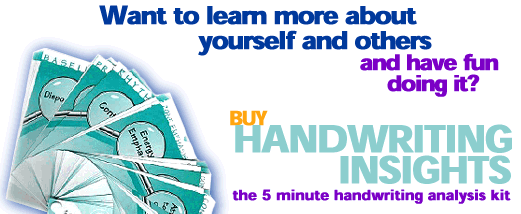

|
Take this
FREE handwriting analysis course to better understand your friends,
family, ancestors, and Yourself!
|
 Handwriting Insights is a high quality deck of 64 connected, illustrated cards that teaches you handwriting analysis as you use it. You'll have your first analysis 15 minutes after you open the package. After the first time, analyzing a hand writing sample just takes 5 minutes. Developed by a mediator and an award winning professional graphologist, it produces an analysis that is accurate, but is worded constructively so that there are not hurt feelings. We call it "Entertainment that's Insightful." This is simply the easiest way to generate a basic handwriting analysis! Get yours today! Now only $19.95!
Welcome to my website! This is a no-hype zone - and I will be as brief as I can. Handwriting Insights will not make you a professional handwriting analyst. It is not a book. It is not a course. It is a set of 64 cards, connected by a rivet in one corner, which explain eleven different handwriting traits. Each trait has three to ten variations. So for example, the trait of Slant, which represents a person's emotional interactions, has the following six variations: strong right, right, vertical, left, strong left, and varied. On the front of each card is an example of that particular variation, and a description of what to look for in the writing. On the back of the card is both a brief and a more detailed explanation of what that particular writing trait means. These explanation are descriptive, not judgmental. This means that people will get insight into what their handwriting is saying about their personalities without getting their feeling hurt. Producing an analysis is a simple as going through the deck, seeing which of the variations most matches the writing for each of the eleven traits, and sliding the matching card to the side. You wind up with eleven cards, and when you turn the deck over, there is the analysis. If you want a record of the analysis, you simply check of the appropriate boxes on the Individual Insights Pad that comes with your kit. This unique way of doing a handwriting analysis has been granted a U.S. Patent. This format offers several advantages for the person who does not want to be bothered with becoming a professional graphologist and who just want to have fun with hand writing analysis and reap some of the benefits from it. Here are some of the advantages that it provides. • You don't need to remember which traits to look at and what they mean. Instead, you just go through the deck and slide the matching card to the side. • When you are doing someone's handwriting sample with them, you don't have to worry about how to word things. You can simply select the cards and then just flip them over and hand them to the person for them to read (I find that people prefer this) or you can read the cards to them. • People don't think that you are just "making up" the analysis since it is right there on the cards. • Typically, as people are going through the cards it gets them talking about what they do and don't agree with. This is a really great way to learn more about someone and how they see themselves. • There are hundreds of traits that professional graphologists look at to come up with a professional analysis. Handwriting Insights gives you eleven traits that have been proven over time to give a good basic analyis with a fraction of the effort. I wrote the free basic handwriting analysis course so that you could easily learn to do a simple analysis of hand writing. I integrated some of the graphics from my deck to make it as easy as possible to learn, but it is harder to do an analysis this way then to use the deck. I hope that it will give you an idea of what the deck has to offer, and you will consider a purchase. It was designed so that it would be ideal to use with teens as a self-awareness tool. It also would be perfect for counselors to break the ice with a new client. Parents will find it a great tool to get their teen talking about themselves. Genealogists appreciate how it reveals the personalities of their ancestors. Handwriting Insights is handwriting analysis with the work removed, and the fun left in. That's why we call it "Entertainment that's Insightful."
|